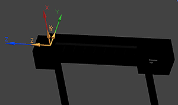
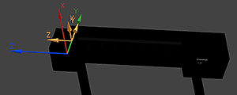

Add a safe move junction to the pocket
In this activity, you will add an additional junction to the tool rack pocket so that during simulations, the machine head moves to a safe point before entering the pocket to retrieve or replace the tool.
-
In the Create Machine Component dialog box, in the Junctions section, click Add New Set
 .
.
-
Click Specify CSYS
 .
.
-
In the CSYS dialog box, from the Type list, choose Offset CSYS.
-
In the Reference CSYS section, from the Reference list, select Selected CSYS.
-
In the graphics window, select the mount junction CSYS you defined.

-
In the CSYS dialog box, in the Translation subsection, in the Y input box, type –50 and click OK.
The entry safe point is now defined.

-
In the Create Machine Component dialog box, in the Junctions section, in the Name box, type P1_SIM_ENTRY1 and press Tab.
Caution
The conjunction names are important to simulations. The junctions used to position the entry moves must be named Px_SIM_ENTRYn, where x is the tool pocket identifier and n ranges from 1 to 10 so that simulations occur sequentially.
The pocket’s safe point junction is now defined. Leave the Create Machine Component dialog box open for the next activity.